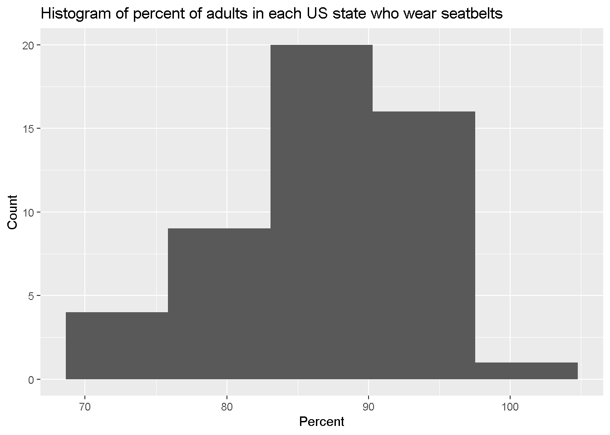
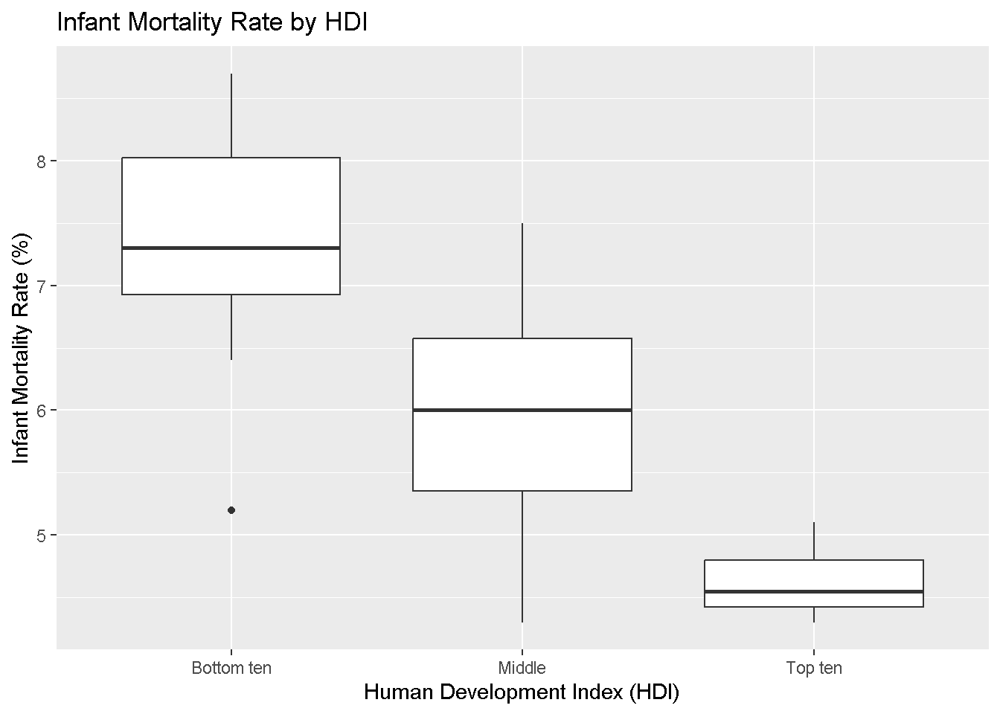

(1/8)*(1/8)*(1/8)[1] 0.001953125P(at least one develops breast cancer (BC)) = 1- P(none develop breast cancer)
\(A\) = woman develops breast cancer \(B\) = woman has positive family history of breast cancer
These are not independent because the presence of \(B\) can affect the presence of \(A\).
Do Exercise 5 here. Feel free to write out any numerical calculations you are using. In doing so, set numerical expression in your narrative using backticks. For instance, (0.3)*(0.4) = 0.12.
\(A\) = older sibling has chicken pox \(B\) = younger sibling has chicken pox
Two events are considered independent if
\[P(A \cap B) = P(A) \times P(B)\] \(A\) and \(B\) are not independent, because we have that \(P(A) \times P(B)\) = (0.5)*(0.5) = 0.25, which is less than 0.35 in the data. This makes sense, because if one sibling has chicken pox, it may be more probable that the other sibling gets chicken pox, since we might assume they are sharing space in a home.
Do Exercise 6 here. Feel free to write out any numerical calculations you are using, setting them apart using backticks in order to draw attention to them. For instance, (0.1 * 0.2)/(0.4*0.6 + (1-0.4)*0.3). When displaying your final answer, use an R chunk to evaluate the answer:
We want to find \(P(B|A) = \frac{P(A \cap B)}{P(B)}\)
\(P(A) = .5\) \(P(B) = .5\) \(P(A \cap B) = .35\)
So we have that the answer is (.35)/(.5).
We just calcuated that P(B|A) = 0.70.
\(P(B^C | A) = 1 - P(B|A)\)
So, the answer is 1-0.70.
We want to find
\(P(B | A^C)\)
We know that P(A^C) = 1-P(A) = 1-0.5 = 0.5
Now, we use the law of total probability.
\(P(B) = P(B \cap A) + P(B \cap A^C)\)
So we have that \(0.5 = 0.35 + P(B \cap A^C)\) and \(P(B \cap A^C) = 0.5 - 0.35 = 0.15\)
Now, we apply Bayes’ Rule to find \(P(B | A^C)\).
\(P(B | A^C) = \frac{P(B \cap A^C)}{P(A^C)}\)
= 0.15/0.5
\(S\) = severe WFNS score \(B\) = bad outcome at one year mark
(10 + 30)/100 = 40/100
Sensitivity = true positive rate = \(P(S|B)\).
Using Bayes’ rule, we have \(P(S|B) = \frac{P(B|S)P(S)}{P(B)}\)
Now,
So, \(P(S|B)\) = [(30/40)*(40/100)] / (40/100), which simplifies to
Specificity refers to the probability that a patient with a “good outcome” does not have a severe WFNS score. Mathematically, it is the probability that a patient has a non-severe WFNS score given that they have a good outcome: P(Non-Severe WFNS∣Good Outcome)P(Non-Severe WFNS∣Good Outcome)
So, we want: \(P(\text{non-severe score}| \text{good outcome} ) = \frac{P(\text{good outcome} | \text{non-severe score})P(\text{non-severe score})}{P(\text{good outcome})}\)
This simplifies to (50/60)*(60/100)/(60/100) = 50/60
Using Bayes’ Rule, we find that the specificity, or the probability that a patient with a good outcome has a non-severe WFNS score, is approximately 0.833, or 83.3%. This indicates that the WFNS score is fairly specific for identifying patients who will have a good outcome.
To calculate the Negative Predictive Value (NPV) of “high NDKA” as a diagnostic for bad outcomes, we first need to clarify that NPV is the probability that a patient does not have a bad outcome given that their NDKA level is low (i.e., the test result is negative). Given Information:
Negative Predictive Value = P(good outcome | Low NDKA)
Using Bayes’ rule, this can be re-written as: [P(low NDKA | good outcome) * P(good outcome)] / P(low NDKA)
P(low NDKA) = P(low NDKA | good)P(good) + P(low NDKA | bad) P(bad)
P(low NDKA) = (0.90)*(0.60)+ (0.80)(0.40) = 0.86
Then, the NPV is [P(low NDKA | good)P(good)]/P(low NDKA)
=
The negative predictive value (NPV) of using “high NDKA” as a diagnostic for bad outcomes is approximately 0.628, or 62.8%. This means that if a patient has a low NDKA level, there is a 62.8% chance that they will not experience a bad outcome at the one-year mark.
If we are willing to accept a false positive rate of at most 10%, that means that we are willing to accept a Specificity as low as 90%, since False Positive Rate = 1 - specificity. The true positive rate is also known as the specificity. So, if we look at 90% on the x-axis, the corresponding specificity (or TPR) on the y-axis is about .35. So, we can attain aboug 35% true positive rate with that stipulation.
Note: The ROC curve represents the trade-off between sensitivity (TPR) and specificity (related to FPR). Higher TPR values are better, but they usually come at the cost of increasing FPR, depending on the threshold set by the classifier.
We would rather use S100\(\beta\), because the sensitivity levels are consistently higher compared to NDKA given a certain level of specificity.
Rows: 50
Columns: 17
$ X <int> 1, 2, 3, 4, 5, 6, 7, 8, 9, 10, 11, 12, 13, 14, 15,…
$ State <chr> "Alabama", "Alaska", "Arizona", "Arkansas", "Calif…
$ Region <chr> "South", "West", "West", "South", "West", "West", …
$ HDI <chr> "Bottom ten", "Middle", "Middle", "Bottom ten", "M…
$ InfantMortalityRate <dbl> 8.7, 6.7, 6.1, 7.5, 4.3, 4.8, 4.8, 6.7, 6.1, 7.5, …
$ CVDeathRate <dbl> 229.7, 154.1, 138.8, 223.2, 145.6, 128.4, 147.8, 1…
$ DrugDeathRate <dbl> 15.7, 16.0, 19.0, 13.8, 11.3, 15.4, 22.1, 22.0, 16…
$ MotorDeathRate <dbl> 17.5, 8.8, 13.1, 17.8, 8.1, 10.0, 7.4, 13.3, 14.5,…
$ CancerDeathRate <dbl> 175.6, 159.8, 141.3, 185.4, 142.8, 134.4, 146.2, 1…
$ Obesity <dbl> 35.7, 31.4, 29.0, 35.7, 25.0, 22.3, 26.0, 30.7, 27…
$ Smoking <dbl> 21.5, 19.0, 14.7, 23.6, 11.0, 15.6, 13.4, 17.7, 15…
$ Exercise <dbl> 45.4, 55.3, 51.9, 41.2, 56.3, 60.4, 50.9, 49.7, 50…
$ Seatbelt <dbl> 95.7, 88.4, 87.2, 74.4, 97.1, 82.4, 85.1, 91.9, 88…
$ FluVaccination <dbl> 43.9, 39.1, 41.8, 46.2, 48.0, 49.9, 52.7, 51.2, 43…
$ ChildVaccination <dbl> 70.6, 66.3, 72.3, 66.6, 75.0, 75.4, 80.6, 79.3, 66…
$ Under18 <dbl> 22.8, 25.3, 24.1, 23.8, 23.6, 23.3, 21.6, 21.8, 20…
$ Over65 <dbl> 15.3, 9.4, 15.9, 15.7, 12.9, 12.7, 15.5, 16.4, 19.…ggplot(data = cdc, mapping = aes(x = Seatbelt)) +
geom_histogram(bins = 5) +
ggtitle("Histogram of percent of adults in each US state who wear seatbelts") +
xlab("Percent") +
ylab("Count")
The distribution looks nearly normally distributed, with some left skew.
Create side-by-side boxplots examining the distribution of infant mortality rate by HDI. Comment on what you see. Be sure to provide a title and meaningful axis labels.
ggplot(data = cdc,
mapping = aes(x = HDI,
y = InfantMortalityRate)) +
geom_boxplot() +
ggtitle("Infant Mortality Rate by HDI") +
xlab("Human Development Index (HDI)") +
ylab("Infant Mortality Rate (%)")
For areas with higher HDI, the infant mortality rate tends to be lower. (Or, for lower HDI, the infant mortality rate tends to be higher).